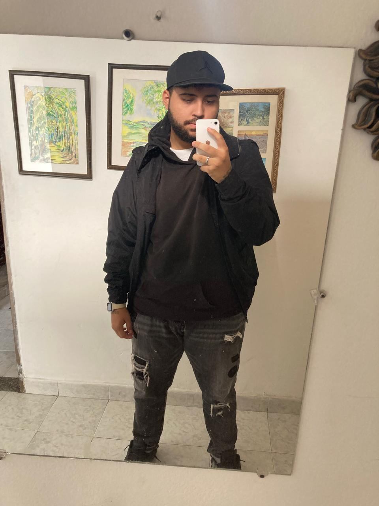

¿QUIENES SOMOS?
ByteCore es una empresa que brinda soluciones de soporte técnico innovadoras para empresas y usuarios. Combinamos tecnología de punta con atención personalizada para resolver problemas de forma remota o presencial.
NUESTRO PRESONAL O TECNICOS

CRISTIAN CANO
Redes y seguridad informática. Más de 5 años de experiencia.
THOMAS NORIEGA
Reparación de hardware y soporte en sitio. Ingeniero de sistemas.
MARIANA VELEZ
Soporte remoto y administración de plataformas en la nube.
ALEXANDER LAINEZ
Seguridad informatica y actualizancion de drivers.
ACERCA DE NUESTRA EMPRESA
Desde 2020, ByteCore ha revolucionado el soporte técnico en Colombia. Nuestro enfoque se basa en la innovación, el talento humano y la tecnología, ofreciendo respuestas rápidas, efectivas y amigables.